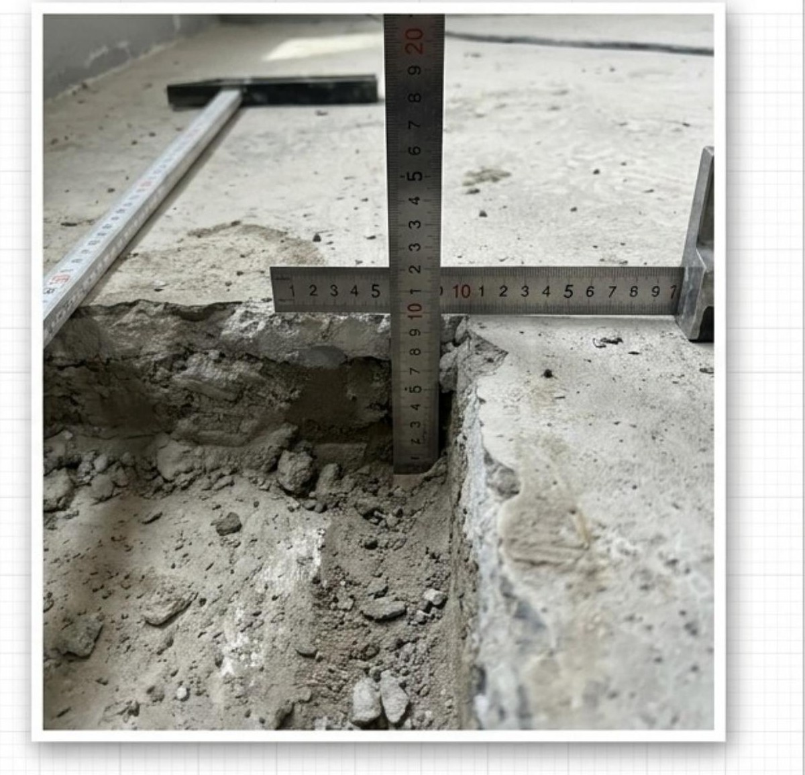

법무법인 제이엘 하자소송 수행 제안서
01 / 31

현장 실측 · 파취조사 후 바닥 두께 계측
DEFECT LITIGATION PROPOSAL
담보책임기간이
도과하기 전,
지금
시작해야 합니다
공동주택 하자소송을 하자 진단부터 감정, 소송, 회수까지
법무법인 제이엘이 처음부터 끝까지 직접 수행합니다.
18건
수행 사건
328억
판결금 합계
329만원
세대당 평균
수신
{{단지명}} 입주자대표회의 귀중